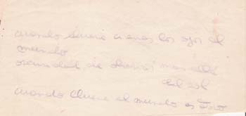

Poesía
José María Pallaoro nació en La Plata en 1959. Vive en City Bell. Es director de la revista de poesía El espiniyo. Además edita Aromito (www.aromitorevista.blogspot.com). Publicó plaquetas, cuadernos y cuatro libros de poemas: El viaje circular, Pájaros cubiertos de ceniza, Son dos los que danzan y Poemas anteriores. Se le puede escribir a jmpallaoro@gmail.com.
Dejadme vivir con mi locura,
llegaré al cielo o al infierno.
Quiero vivir el tiempo libre,
irreal, sutil, diáfano y bello.
–Roque Bernardo Molina
(poeta, internado en Sala Bayle)
Del otro lado
ruidos ajenos
acompañan
otra mañana
Instante
después de mirar
lo soporta
la lluvia
con voluntad de pájaro
La única verdad es
¿la verdad preludia
esta realidad
ficticia?
El pacto
el hombre basflema
contra sí
mismo
hombre pájaro
esmirriado
nota la caí
da
al producirse
Piropo
en los corredores
el calderista
es bossa una sonrisa
qué divino papito
para futuros hijos
Alcanfor
el cadáver
desciende
objeto de su
propia melanco-
lía un pitillo
llega a mí
y observa
su olor
impregna
la mañana
con una fría
caricia
¿Quién soy?
no soy aquello
qué quieren de mí
tampoco
el que quisiera
entre uno y otro
aquí
en este pabellón
poco importa
El regreso
en un sino
triturado
de abismos
muere la noche
cuando el rocío
se marchaba
hola dijo
y las manos
se deshacían
abarrotadas
de necesario afecto
El muchacho ángel
el muchacho entró
a la caldera
y sacudiendo sus alas
desovó
soy sol o sustancia
un espíritu que anida
en el mí
el mismo
y dando
la espalda se voló
al día
a dar batalla
El muchacho en la caldera
sorprendido dije
—desconozco cuál
es el truco
¡quiero retruco! —ni perezoso
ni corto largó
el muchacho
y divertido desaparecía
con el tajeado estó mago
atado
entre sus manos
de al hambre
El muchacho observa el cielo
—la cosa está difícil
—cómo decís
—la casa no es nuestra
El muchacho en el pabellón
estamos chapoteando en el luto
sin conocer la alegría
como planta de agua
sin raíces estamos
clamaba
a boca de jarro
vacío
El muchacho canta un bolero
apasionado quiero estar
pero sabes el amor
es tan extraño
apasionado como ya no
recuerdo
apasionado quiero pero
no haces caso a
mis pal-
abras y tu
corazón
lejos
al otro lado
del mar
Bolero
machucado corazón —dijo
y se lo sacó
Medio mundo otro
cuando llueve
cierras los ojos
al mundo
oscuridad de observar
más allá d
el
sol
cuando llueve
el mundo
es
otro
Lluvialma
la lluvia ay
penita castiga sin
misericordia
la orfandad del alma
toda ternura
desconocida lame
los despojos
ojo
en la oscuridad
deliramos
luz
Arquitectura del alma
estar huérfano de dignidad
es estar
muerto
como sólo un hombre sabe
buscar en el secreto
de la vida ser
uno y su alma
el edificio
se incendia
de corazón de hombre
sangra
un líquido celeste
Estrellas
caen lágrimas
del cielo:
estrellas!
enfermeros dicen
es lluvia
las estrellas no
caen aclaran
solo son partículas
descompuestas
prefiero pensar
con ellos yo sé
que son es-
trellas
mágicas de cielo
como hojas
cayendo
de un árbol
pero
¿de qué ojos?
Dormir
nadie ve la
muerte o la vida
ellos duermen el día
la noche
señor: ¿dormir es
cerrar ojos
y no pensar?
en el pabellón cinco
de la clínica de mentales
se duerme
con ojos abiertos
Transito
aquí yace
la ilusión profa-
nada
nadie quiere
olvidar
lamentos
asidos para
siempre
todo cae
pierde
sentido
¿muere?
Des amor
son horas de
fatigada llovizna
internos hurgan
sus manos doloridas
nadie los espera
¿nadie los ama?
Hospicio
pequeña ciudad
habitada por hombres

Imágenes: hojas de electroencefalogramas tomados a pacientes del hospital neuropsiquiátrico de Melchor Romero.
Sobre estas hojas Pallaoro escribió las primeras versiones de los poemas que aquí presentamos.